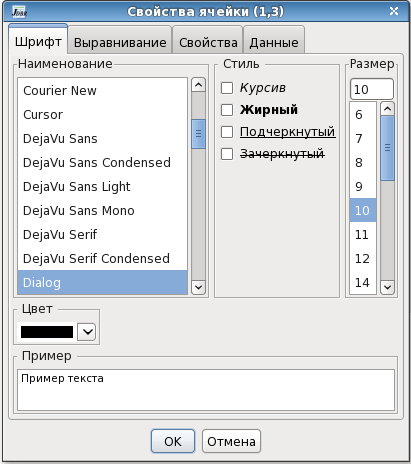
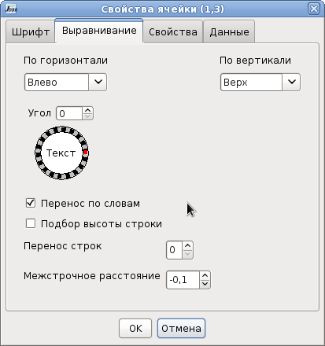
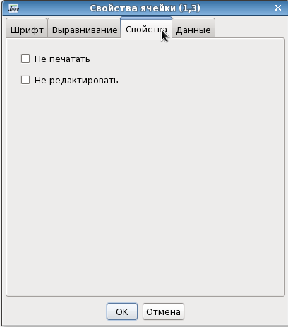
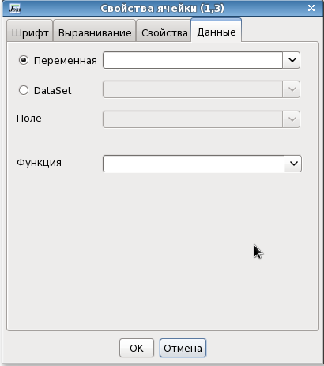

Свойства ячейки
Диалог Свойства ячеек
открывается при выборе команды Свойства
из контектного меню ячейки или при нажатии комбинации клавиш
Ctrl+Enter. Изменения своств применяются ко всем выделенным ячейкам.
Первая вкладка Шрифт позволяет
настраивать шрифт в ячейках.

Вкладка Выравнивание содержит
параметры выравнивания содержимого ячейки.
Можно установить выравнивание по горизонтали, по вертикали, повернуть
текст на любой угол.
При установке флажка Перенос по словам,
строки
которые
не входят по ширине ячейки переносятся по словам.
При установке флажка Подбор высоты
строки, высота строки автоматически увеличивается до
высоты текста или изображения в ячейке. Подбор высоты строки происходит
при формировании отчета и при редактировании текста в редакторе ячейки.
Поле Перенос строк служит для
установки количества строк на которые переносится текст который не
входит в ячейку.
Если поле больше 0 и текст в ячейке не входит по ширине, то слова не
входящие в ячейку переносятся в левую ячейку нижней строки. Если
перенесенный текст снова не вмещается в ячейку, то он снова переносится
в нижнюю левую ячейку и так пока не вместиться весь текст или не
количество строк переноса не превысит заданное. Увеличение высоты
верхних ячеек в этом случае происходит только до высоты одной строки, а
последней строки до высоты всего текста в ячейке. Перенос строк
действует только при установленных флажках Перенос по словам и Подбор высоты строки.
В поле Межстрочное расстояние
можно регулировать относительное расстояние между строками в ячейке.

В вкладке Свойства
устанавливаются специфические свойства ячейки
Не печатать - при печати
содержание ячейки не будет выводиться на принтер.
Не редактировать - после
формирования отчета пользователь не сможет редактировать содержимое
ячейки.

В вкладке Данные можно
установить источники данных ячейки: переменную или поле
из набора данных и установить пользовательскую функцию которая будет
запускаться после формирования ячейки.
